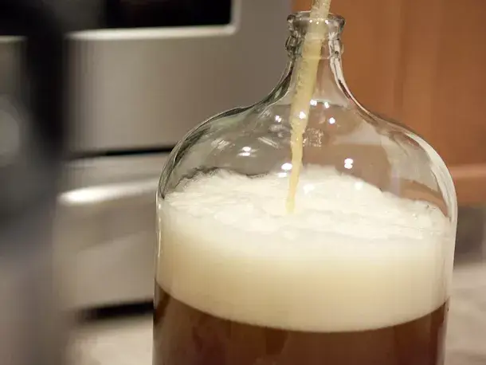
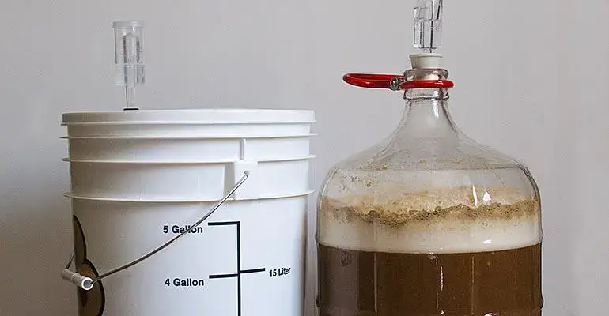

Get Started
This procedure outlines the steps to produce 5 gallons (23 litres) of homebrew. All beer kits will provide instructions specific instructions to brewing their product variation, but here’s an introductory guide and tips to get you started, or if you’re curious to try it out.
Estimated times for each step are provided, however if this is your first time brewing, give yourself approximately double the time to make sure you are confident in the process. Give it a quick read through before starting your brew.
Equipment

Required:
- Beer Recipe Kit (Grain Extract and Fermenting Yeast)
- Malt Extract (or Brewing Sugar)
- Carbonation Drops
- Sanitiser
- Fermenting Bucket and Air Lock
- Auto-Siphon
- Brewing Spoon (or other large spoon)
- Hydrometer
- Beer Bottles and Crown Caps
- Bottle Capper
Optional:
- Bottle Washer
- Bottle Drying Tree
Sanitise, Sanitise and... Sanitise

Estimated Time: 15 minutes + 1-2 hours wait
This is arguably the most important step in the brewing process. Any *impurity* in the mixture can disturb the fermentation process and alter the taste of your beer. Therefore, ensure that every piece of equipment you use is clean and has been sterilised according to the instructions on your chosen sanitiser. Note, this process can vary from 30 minutes to 24 hours depending on your chosen sanitiser.
Brew

Estimated Time: 30-45 minutes
- Soften the beer kit by placing the tin in boiling water for 2-3 minutes for easier extraction.
- Add the contents of the beer kit and the malt extract into the fermentation bucket.
- Add around 4 pints of boiling water and intensely stir the solution for 5 minutes. This is to fully dissolve the ingredients and to add oxygen to the mixture to encourage fermentation after adding yeast in a later step.
- Fill the remaining volume by alternate between hot and cold water to bring the temperature of your brew to between 18-26°C. It’s recommended to aim for the higher end of the range, as its easier to cool the brew afterwards if needed.
- Test the original gravity of the sample with the hydrometer. Float the hydrometer in a small sample and record the original gravity reading of your brew. This should be around 1040 for most kits, however this varies with the sugar content in the solution.
- Add the yeast to your brew and stir in well.
- Seal the fermentation bucket by securing the lid and the air lock. Check your brand instructions to find out how to secure your specific air lock.
Ferment

Estimated Time: 1-4 weeks
- Store the fermentation bucket in a dark room at room temperature, between 18-26°C. Leave your beer to ferment for the manufacturer’s recommended time, which usually takes at least 5 days. Once the gravity reading is the same for two consecutive days the beer is ready for bottling.
- Record the final gravity after fermentation, and calculate the strength of your beer by comparing the original and final gravities. Use the formula below for an approximation of the ABV or the online calculator *here*.
- %ABV = (OG – FG) x 131
Tips: The required fermentation time is very much dependent on the specific kit you buy and the type of beer you are brewing (lager, IPA, stout, etc.). It’s recommended to leave your beer to ferment for 1.5-2 times the manufacturer’s suggested time for a cleaner and more full bodied taste, especially if you store it in a cooler room. The less time you leave for fermentation, generally the sweeter your beer will taste, as less sugars have been converted to alcohol. However, if you leave it to ferment for too long (roughly over 1 month), it will become very bitter as the yeast begins to heavily infuse into the taste.
Bottle

Estimated Time: 1-1.5 hours
- Ensure all bottles and caps are fully sanitised before you begin the bottling process. Fill the bottle with a small amount of sanitisation solution and shake thoroughly. Pour this into the next bottle and repeat for all bottles. Rinse the each bottle with water after sanitising. Alternatively, use a bottle washer and bottle drying tree to easily rinse and drain your bottles.
- Place the siphon...
Carbonate

Estimated Time: 2 weeks
- Store the fermentation bucket in a dark room at room temperature, between 18-26°C, as for the fermentation process. After around 2 weeks your beer will be fully carbonated and ready to drink.
Enjoy

Well done! You’ve made your own beer and it’s now ready to drink! Chill a couple bottles in the fridge for around 2 days and enjoy your first crisp beer of the batch!
Brew, Sleep, Carbonate, Repeat

Try out one batch. Learn from your mistakes. Discover what flavours you like and don’t like. Repeat until you find your rhythm and your taste.